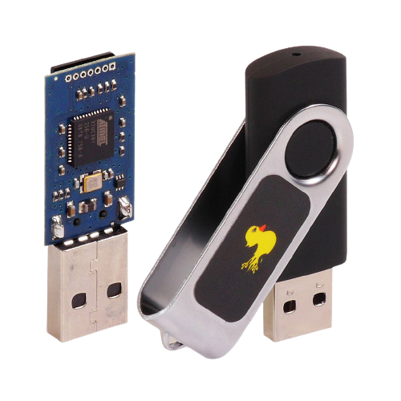

USB SECURITY SECURITY MANAGEMENT
USBs are getting faster in terms of data rate communication between itself and the plugged device, they are also getting capable of much more storage but don’t appear to be any improvement in the security aspect. Since 2015 has been shown to the public that USB devices can be compromised in a very serious way directly in the firmware
RISKS ASSOCIATED WITH USING USB DRIVESUSB drives are used to store and transfer files from one computer to another; however, these features make them helpful to someone attempting to access your personal information. Attackers can use USB drives to infect other computers with malware that recognizes when the drive is plugged in and downloads harmful code into it. Attackers can also use their USB devices to steal data from computers. If an attacker has physical access to a computer, he can download sensitive data directly to a USB drive. Aside from being the target of a bad actor, the data can be compromised simply by misplacing the USB. The most obvious security concern associated with USB devices is that they are easily lost or stolen, and if the data was not backed up, the loss of a USB drive can result in hours of wasted labor and the possibility that the information cannot be recreated (i.e. digital private keys). If the data on the disk is not encrypted, anyone using a USB drive can access the whole contents of the drive. |
 |
CORRUPTING THE USBLike other devices the USB controller has a bit of code called firmware, a software that provides the low-level control for a device's specific hardware, it is like a mini operating system on a small chip in USB devices. The firmware can be easily altered to become malicious due to limited protections against being overwritten, once reprogrammed can: emulate a keyboard in issue commands on behalf of the logged in user, for example to mess with files or install malware that can infect the controller chips of other USB devices connected to the computer; connect to the network card and change your computer's DNS settings to redirect traffic too nasty sites with more malware, when it detects the computer is starting up it can load a small virus which infects the computer's operating system prior to starting up; replace the computer's bios by emulating a keyboard and unlocking hidden file on the USB drive. |
|
RUBBER DUCKYRubber Ducky is the name of a similar USB device that is used to get inputs (i.e. from the keyboard) while the victim is using the computer. The USB rubber ducky has a 32-bit CPU and a micro SD card, when plugged into a computer the rubber ducky tells the computer that it is a USB keyboard (so not a USB), then the USB’s CPU starts reading all of the key inputs before giving them out to the PC, he USB bus acts as if it was a normal USB keyboard. Rubber ducky masquerades as a USB keyboard so it'll work on anything that can be plugged with a USB keyboard, it can work on all the operating systems even on an Xbox, if you can plug a USB keyboard you can plug the USB rubber ducky. |
 |
USB KILLERUSB Killer is a device with the appearance of a USB stick that sends high voltage overloads into the device to which it is connected, damaging its hardware components. Most of the devices that get plugged with these USBs crash and stop working for internal short circuits. USB killer circuit contains a high voltage inverter which is powered from a host USB computer, once plugged in it charges it's built-in capacitors to about 200 volts and then discharges them onto the data lines which effectively kills a USB port or sometimes a whole computer device itself and the damage will be permanent. |
|
PROTECT PERSONAL DATAThere are techniques to protect the data on your USB drive as well as any machine into which it may be plugged. Use security features, passwords, and encryption on your usb drive to protect your data, and make sure you have backups in case your drive is lost. Keep personal and business USB drives separate, don't use personal USB drives on company computers, and don't plug in corporate USB drives into your personal computer. Make sure to disable the "auto run" function that is enabled by default. When removable media such as CDs, DVDs, and USB drives are inserted into a drive, auto run allows them to open automatically. Autorun can be disabled to prevent harmful programs on an infected USB stick from automatically running. To make your computer less vulnerable to attacks, use and maintain security software, keep it up to date, and utilize a firewall, anti-virus software, and anti-spyware software. |
Chapter Security |
Paolo Deidda |
|
|---|